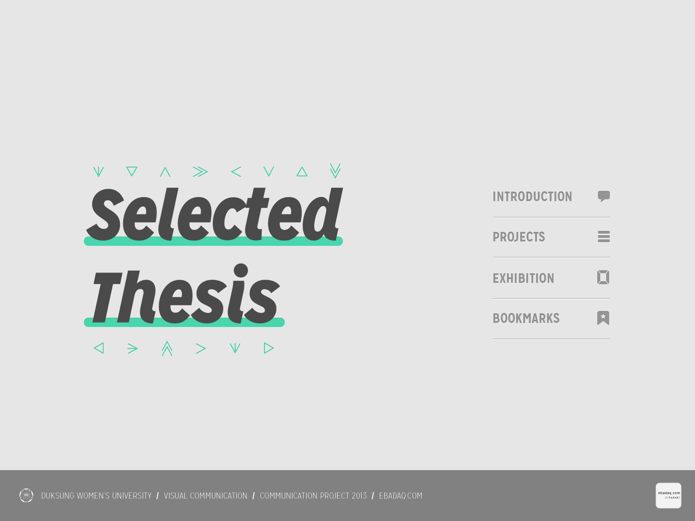
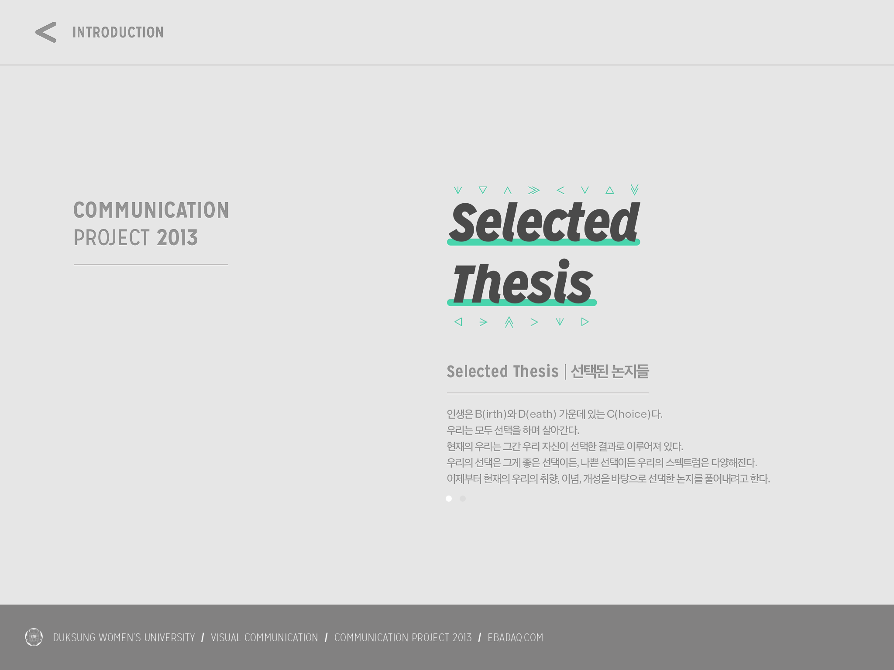
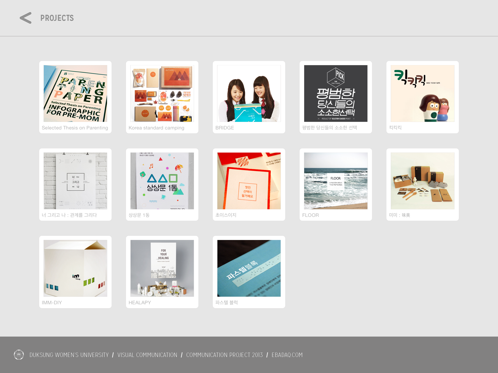
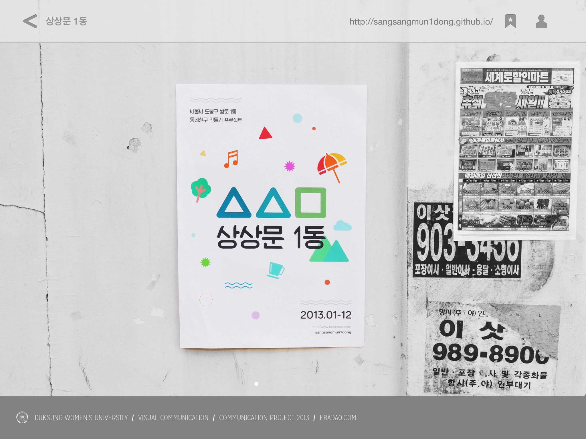

Web Design
2013.10
Duksung Womens Univ Communication Graduation Project
SNS 오픈 모닝 (Open morning)은 아침 일상 사진을 공유할 수 있는 서비스이다.
이 서비스는 앱을 기반으로 하며, 웹사이트로는 보거나 댓글을 다는 것만 가능하다.
포스트 업로드는 아침 6시부터 11시까지 총 5시간동안만 쓸 수 있다.
사용할 수 있는 시간을 제한하여 늘 흔적도 없이 사라지는 귀중한 아침 시간의 소중함을 느낄 수 있게 해준다. 그리고 사진에는 올린 시간이 크게 기재되어 시간을 기반으로 하는 서비스라는 것을 알 수 있게 하며 유저들이 올리는 사진이 언제 활동된 사진이라는 것을 한 눈에 볼 수 있게끔 하여 그 시간에는 자고 있던 늦잠꾸러기 유저에게는 좋은 자극을 준다. 그리고 아침 일상 사진을 올릴 때는 태그를 달 수 있게 하여 아침에 했던 행위들, 예를 들면 책 읽기, 커 피 마시기, 영어 공부 하기 등을 정리할 수 있게 해주고 정리된 아침 일상은 마이페이지에서 체계적으로 정리되어 보여준다. 오픈 모닝의 궁극적인 목표는 아침을 효 율적으로 보내고 있는 사람들의 아침 일상 사진을 보며 긍정적인 자극을 느끼게 해주는 것, 또 사용자가 직접 적극적으로, 능동적으로 체계적인 아침을 보내기 위해 서 앱을 사용하게끔 하는 것이다.



